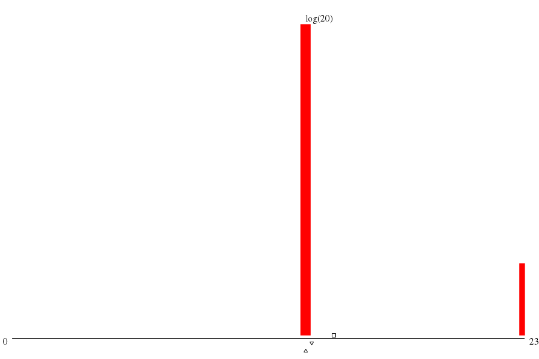

|  | ||
| maxs | mins | |
|
(21.sum) 2308 |
(20.sum) 1321 |
|
|
(22.sum) 2308 |
(19.sum) 1321 |
|
|
(0.summ) 2303 |
(18.sum) 1321 |
|
|
(1.summ) 1321 |
(17.sum) 1321 |
|
|
(5.summ) 1321 |
(16.sum) 1321 |
| disk (MB) | mode ▵ | μ ▫ | (μ+σ)/μ | 1st alloc. max value | 1st alloc. max through ▿ | 1st alloc. min waste |
| -- 1.385 xE9 |
-- 1.519 xE9 |
-- 1.234 |
throu: 1.000 waste: 42.74%
alloc: 2.420 xE9 |
throu: 1.616 waste: 2.20%
alloc: 1.416 xE9 |
throu: 1.616 waste: 2.20%
alloc: 1.416 xE9 |